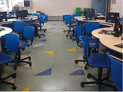
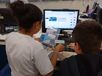
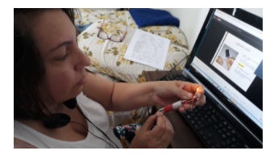

A EMEB Professora Sylvia M. Fantacini Zanetti atende crianças da Educação Básica I, está situada no Bairro Jordanópolis, município de São Bernardo do Campo.
Na entrada do atual prefeito, nossa escola foi uma das primeiras a entrar no "Projeto Educar Mais", ou seja, atuação da escola atendendo em período integral. No início foi um desafio muito grande, mas aos poucos fomos nos adequando e incluindo vários itens na nossa jornada, propostas da SE para melhor atendermos às necessidades dos alunos e com a principal preocupação de fazer com que os alunos sintam-se bem no ambiente escolar no período integral.
A escola possui um Laboratório de Informática, equipado com 17 máquinas, 10 kits de Arduíno, 1o kits de makey makey e alguns kits antigos de Lego. Desde o ano passado se tornou Pólo de Educação Maker, porém devido a pademia, ainda não foi realizada compra de máquinas como: cortadora laser e Impressora 3D.
Nosso Laboratório de Informática:

Bem-vindo(a) ao nosso Blog clique aqui
Essa situação de pandemia nos fez refletir e muito, tivemos que aprender novas formas de trabalhar e tecer nosso caminhar durante 2020, com certeza tivemos muitos desafios que aos poucos foram e outros ainda estão sendo superados. Ano passado apresentamos na nossa última reunião com pais, um vídeo ilustrando esse caminhar ao som dessa belissíma música da banda Jota Quest.
Música que compôs nosso vídeo de reunião com pais clique aqui
Eu sou a Elisângela Oliveira dos Santos, hoje moradora do município de São Bernardo do Campo, lugar que já amo e escolhi para morar. Sou formada em Pedagogia e atuo na rede municipal de ensino de São Bernardo do Campo desde 2006, fiquei como professora de Ensino Fundamental I até o ano de 2013. em 2014, resolvi me inscrever para professora de Pro- jetos Tecnológicos e neste mesmo ano consegui ingressar como PAPP, Professora de Apoio a Projetos Pedagógicos, responsável pelo laboratório de informática da escola e das aulas de robótica.
Daí então começei a trabalhar com esses recursos mais tecnológicos, com o passar dos anos venho participando de oficinas, workshop afim de conhecer e me aventuar na área de robótica, pois, nem sempre a rede de ensino promove formações para tal fim. Já desenvolvo trabalhos simples com circuitos elétricos e com placas de prototipagem (makey makey e arduíno) também com programação com scratch. Estou nesta escola desde 2019.
Crianças programando:

Na remoção de 2.014 solicitei minha tranferência da EMEB. Benedito José de Moraes para a EMEB. Profª Sylvia Marilena Fantacini Zanetti, mais conhecida por Sylvia Zanetti. Então em 2.015 iniciei minha jornada de trabalho neste Unidade Escolar.O meu primeiro ano nesta unidade escolar foi muito difícil, peguei um 2º ano conforme minha solicitação, porém foi uma sala numerosa e com diversos graus de dificuldade dos alunos. Minha saúde também não colaborou, já estava em tratamento, mas a medicação ainda não estava alinhada às minhas necessidades. Fechei o ano com muita tristeza por ver que meu desempenho ficou à desejar e também ouvi muitas críticas da gestão e de colegas de trabalho. Neste final de ano pensei em pedir afastamento, mas em janeiro do ano seguinte meu médico indicou uma nova medicação a qual eu simplesmente "acordei" e com todas as minhas forças lutei e senti na época que era uma "nova profissional". Fechando o ano seguinte com mais satisfação e o sentimento de dever cumprido.De repente na nova remoção, encontrei com a professora Elisângela, a qual já a conhecia da EMEB. Benedito. Desde de então nossa vida na escola mudou totalmente. Gostamos de nos aventurar em novos caminhos, projetos, cursos e experiências diferenciadas para sermos, a cada ano, professoras melhores para os nossos queridos alunos. Na entrada do atual prefeito, nossa escola foi uma das primeiras a entrar no "Projeto Educar Mais", ou seja, atuação da escola atendendo em período integral. No início foi um desafio muito grande, mas aos poucos fomos nos adequando e incluindo vários itens na nossa jornada, propostas da SE para melhor atendermos às necessidades dos alunos e com a principal preocupação de fazer com que os alunos sintam-se bem no ambiente escolar no período integral.
Desde então, estamos a cada ano, buscando novos conhecimentos que possibilitem que nossos alunos estejam dentro de um processo de ensino-aprendizagem, respeitando suas individualidades e que no futuro possam atuar como protagnistas em suas ações.
Nós, Professora Valdirene e Professora Elisângela, este ano fomos contempladas com a oportunidade de participar deste curso que nos pareceu muito interessante pois estaremos adquirindo conhecimentos básicos em Cyberpedagogia - Pedagogia Digital para Projetos com Robótica e Tecnologias e também gostamos da ideia dos projetos serem voltados para a reciclagem, reuso…
Depoimento
Muita expectativa para esta aula, mas me sentindo parte do grupo. Iniciar os trabalhos usando a extensão .html e tendo resultado em minha primeira tarefa foi de imensa satisfação. Tive uma pequena dúvida na hora de salvar o arquivo, só faltava o ponto antes do HTML, consegui sozinha perceber a minha falha.
Ícone:
Ícone:


Depoimento
Quando chegou o momento de colocar a pilha de forma que eu pudesse acender o led, fiquei muito tensa. Material caiu no chão, bati a cabeça na mesa, não conseguia desencapar o fio, as peças cairam das minhas mãos. Tentei algumas vezes, mas para não confundir a turma que estava conseguindo, parei e resolvi fazer num momento com calma e com mais tempo, pois sabia que a aula seria colocada à disposição no Sistema Moodle. Consegui num outro dia com apoio do meu esposo. Acredito também que me perdi porque não tinha o porta pilhas. Já o Buzzer consegui logo de primeira, a satisfação retornou.